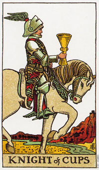

圣杯(皇后)意味透过倾听直觉而成功。
圣杯(皇后)代表所有水元素的特指，是水元素当中属于水的部分。她展现了融合直觉、想象、创意和行动的可能性。她的基本特质是情感和想象力丰富，然而却有足够的成熟度，可从她的灵感当中产生具体的结果。她的脚浸在水中，而王座却置于陆地，为她的梦想成真提供了强而有力的支持。
她从经验得知，杂乱无章的想象所产生的结果通常是又显得，因此它可以将精力用在对身体、情感、精神及心灵上都相当有价值的行动上。创造上的训练是她最大的成就。虽然她可能显得温柔又细心，但眼神却意味着一种坚强的意志。爱调和她的意志，并增加个性上的深度。她带着爱心和怜悯行事，而且常常展现出浓浓的家庭感情。
这张皇后牌代表占星学中水的符号，包括巨蟹座、天歇座和双鱼座。手中的杯子是她自己去创造的，而且比这组牌的其他杯子更华丽。在她的杯子里，她可清楚的看见她想要什么，以及她该怎么做才可以得到它。杯子给了她有关将来或各种可能性的一份憧憬，而这些别人却不见的看得出来。她对周遭事物和本身有着超凡的敏锐度，并足以展现出强烈的精神力量。由于本性消极(也就是说，喜欢感觉胜于行动)，所以皇后在某些不可预料的事物发生后，通经常会说：“噢，我上个星期才梦见那件事情。”
大体上的意义
圣杯(皇后)意味透过倾听感觉，以及利用富创意的想象力而获得成功。如果圣杯(皇后)是在形容一个人，它代表的是一个成熟的女人，并富有直觉及创造力的本质。属于相当安静的典型;什么事都听，但说得很少。这些能力使她适合从事咨商、心理学、社会工作、照顾孩子、协作、医疗以及任何创造性的工作。通常人们愿意相信她，并把她的沉默解读为允许他们说出困扰他们的事。
皇后可能会有蓝色或浅褐色的眼珠，以及金棕色的头发。但请记住，这牌着重的是她的本质，而非她的外表。
如果是一个问题的答案，圣杯(皇后)可能是暗示透过创造上的训练而达到成功。
两性关系上的意义
圣杯(皇后)是在形容一个思考重心从不曾远离其伴侣或她所爱的人的女人。他认为情感的满足比物质的成功还要来的重要，而且她会贡献出最多的时间和努力给她的关系者、家人和孩子们。她寻求团结，且通常不会像权杖皇后那样，拥有与人竞争或独立的特质。
如果发生问题，她可能不会说出她的感觉，但仍然会对周遭的人给于支持，把自己的感情的困扰放在一边。
在两性关系的分析上，这张皇后意味着友谊上或两性关系的一种赋予。它也可暗示在决定一连串的行动之前，应先倾听心声及直觉。
倒立的圣杯(皇后)
圣杯(皇后)倒立形容水和土之间连结的断绝，而带来两种可能的结局。首先，它可能会沦入沮丧，并丧失所有创造的咨发行，因为她切断来自朋友的支持，以及来自她内在和外在的爱的供应。因此她可能会迷失在感伤或过去的失落中，而对眼前的一切感到茫然无知。
另一种可能是，她会变得冷酷而无情，以愤怒来掩饰她的痛苦，特别是一旦她感觉到自己在爱情上吃了亏。于是，为了报复某个人所给予她的屈辱，她开始惩罚新伴侣，制造出一个又一个的伤心人，而这可能是下意识的举动。她可能会纵情声色，鄙视爱情，而且她的两性关系也变成一种权力的角逐场。
通常这杖牌在暗示你有必要原谅自己或过往生命中的某人，好让自己从过去中解脱。它显示出你必须将焦点重新集中在周遭，并让内心的火和土重新连结。也可以形容一份需要特别留意的悲伤。
圣杯(皇后)倒立代表对某些事情久久不能忘怀。或许她已经宽恕了，但却不曾稍忘。我甚至听到一个倒立的圣杯(皇后)说：“永远不要原谅，永远不要忘记。”